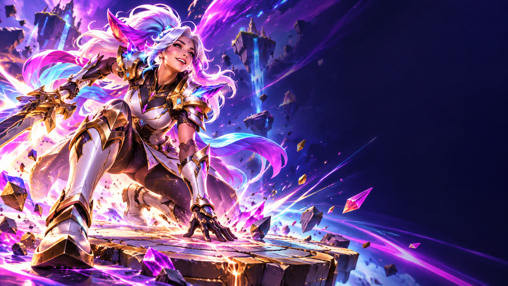

Dos direcciones con arte generado
Conceptos nuevos para las alertas generales del canal. El nombre y los meses se dibujan encima: se podrán sustituir por datos reales.
02 · Sub: welcome, guerrero

¡Welcome, guerrero!
NieblaAzul
3 meses luchando con nosotros
Concepto de personaje original. Todavía es una composición fija.
Vista para aprobar dirección artística. El leve acercamiento es una previsualización; personajes, cápsula y efectos aún no están separados en capas para una animación final. No cambia Twitch, Streamlabs ni OBS.